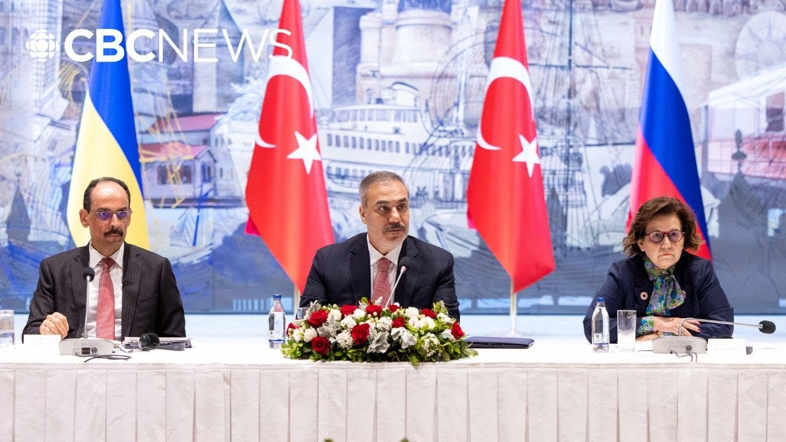

【俄罗斯-乌克兰伊斯坦布尔和平会谈在不到2小时后结束】
Summary: Breaking news: Russia-Ukraine-Turkey peace talks ended in under two hours, with Zelensky absent as he met European leaders in Albania, emphasizing an immediate unconditional ceasefire as the top priority to halt killings and enable diplomacy.
摘要： 突发新闻：俄罗斯-乌克兰-土耳其和平会谈在不到两小时内结束，泽连斯基缺席因他在阿尔巴尼亚会见欧洲领导人，强调立即无条件停火是停止杀戮和推动外交的首要任务。

⏱️ Estimated Reading Time: 5 min
Well, breaking news this hour.
突发新闻。
Russia says peace talks with Ukraine and Turkey have ended less than two hours after they started.
俄罗斯表示与乌克兰和土耳其的和平会谈在开始不到两小时后结束。
Ukrainian President Vimir Zalinski was not in attendance.
乌克兰总统弗拉基米尔·泽连斯基未出席。
He's in Albania meeting with European leaders and addressed the talks earlier today.
他正在阿尔巴尼亚与欧洲领导人会面，并在今天早些时候谈及会谈。
Our number one priority is a full unconditional and honest ceasefire.
我们的首要任务是全面、无条件且真诚的停火。
This must happen immediately to stop the killing and create a solid basis for for diplomacy first of all.
这必须立即实现，以停止杀戮并首先为外交奠定坚实基础。
And if the Russian representatives in Istanbul today cannot even agree to that to ceasefire to this clearly necessary first step, then it will be 100% clear that Putin continues to undermine diplomacy.
如果今天在伊斯坦布尔的俄罗斯代表甚至无法同意停火这一明显必要的第一步，那么将100%明确普京仍在破坏外交。
And this is video from earlier this morning of the talks in Istanbul.
这是今天早些时候伊斯坦布尔会谈的视频。
The Russian and Ukrainian delegation sat at the table for the first direct peace talks in more than three years.
俄罗斯和乌克兰代表团进行了三年多来的首次直接和平会谈。
The Turkish foreign minister says it is quote very important that the talks form the basis for a leaders meeting.
土耳其外长表示，会谈为领导人会晤奠定基础“非常重要”。
Briar Stewart has been watching the uh going on in Istanbul for us this morning.
布里尔·斯图尔特今早为我们关注伊斯坦布尔的动态。
Brier, you know, less than two hours really was the extent of this uh round of talks.
布里尔，你知道，这轮会谈实际持续时间不到两小时。
What do you take away from this as to what this means for peace efforts going forward?
你认为这对未来的和平努力意味着什么？
Well, I think given the huge gap that still remains between Ukraine and Russia with Russia refusing to agree to this 30-day ceasefire, expectations for these discussions were very low and I think they became even lower after US President Donald Trump said yesterday that he didn't think there was going to be any kind of breakthrough until he sat down with Russian President Vladimir Putin.
鉴于乌克兰和俄罗斯之间仍存在巨大分歧，且俄罗斯拒绝同意30天停火，对这些讨论的期望原本就很低，而在美国总统特朗普昨天表示他认为只有与俄罗斯总统普京会面才可能有突破后，期望进一步降低。
And it really seems that this is where this is headed.
这似乎正是事态发展的方向。
Um we understand from from reporting of the discussions in Estumble that Russia according to Ukraine had uh basically presented a bunch of non-starters saying that if they were to agree to a ceasefire one of the conditions would be that Ukraine would have to withdraw its troops from uh the areas that Russia wants to to keep occupying.
根据伊斯坦布尔会谈的报道，俄罗斯向乌克兰提出了一系列不可接受的条件，称若同意停火，乌克兰必须从俄罗斯希望继续占领的地区撤军。
So obviously uh these talks went nowhere but it is this summit between Trump and Putin um which will likely come next and uh this is something that Putin has has wanted for a while.
显然会谈未取得进展，但接下来可能是特朗普与普京的峰会，这是普京长期以来想要的。
Russia has been talking about perhaps even hosting uh US President Trump in Moscow.
俄罗斯甚至讨论可能在莫斯科接待美国总统特朗普。
Uh a short while ago I spoke with a former foreign minister for Ukraine, Demetri Kuliba, and I asked him what he takes away from that that that Trump thinks that the only kind of way there will be some progress is if he sits down with Putin.
不久前我采访了乌克兰前外长德米特里·库列巴，问他如何看待特朗普认为只有与普京会面才能取得进展。
Take a listen.
请听。
If President Trump needs an excuse to meet uh to meet President Putin, then uh he found one.
如果特朗普总统需要与普京总统会面的借口，那么他找到了一个。
Um on the other hand uh Putin is the man who decides on everything who made the decision to go to war and he is the only man who can make the decision to stop the war.
另一方面，普京是决定一切的人，他发动了战争，也是唯一能决定停止战争的人。
So yeah it would make perfect sense to to for for President Put Trump and Putin to talk to him.
因此，特朗普总统与普京对话完全合理。
Now the Kremlin says it wants this meeting but it wants the summit to yield actual results.
克里姆林宫表示希望举行会晤，但要求峰会取得实际成果。
Uh so the question is just really what kind of discussions or other negotiations will be happening between now and then?
问题是从现在到那时会进行何种讨论或其他谈判？
We'll have to wait and see what more comes out of this meeting.
我们需等待并观察这次会晤的进一步结果。
Thanks for following it for us today.
感谢您今天的关注。
We appreciate your thoughts.
我们重视您的观点。
That's Brier Stewart in London.
伦敦的布里尔·斯图尔特报道。